Part I · Still That Day
여전히 그날에
맑은 하늘에 비가 내리던 날. 아오이는 편지를 남기고 떠나고, 렌은 그 거리를 끝까지 달린다. 잊지 못한 마음은 3년 뒤, 피렌체로 향하는 힌트만 남긴 채 끝난다.
Watch on YouTube ↗
울고 싶은 날,
가장 신나는 노래.K-Indie · Light Rock · Bright Sadness

“울고 싶은 날,
가장 신나는 노래”
YouTube · @LIALIACUTE7
AI 뮤직 채널 LIALIA 입니다.
밝게 웃지만 속으로는 수많은 생각을 품고 사는, 이야기를 노래로 만들어 나가는 공간입니다.
슬픈 가사지만 처지지는 않게,
우울한 날에도 힘차게 걸을 수 있게.
일상에 작은 ‘공감의 해방구’가 되기를 바랍니다.
렌과 아오이 — 편지를 남기고 헤어진 그날부터, 피렌체의 광장에서 다시 찾는 마음까지. LIA가 노래로 이어 주는 2부작 뮤직 필름.
맑은 하늘에 비가 내리던 날. 아오이는 편지를 남기고 떠나고, 렌은 그 거리를 끝까지 달린다. 잊지 못한 마음은 3년 뒤, 피렌체로 향하는 힌트만 남긴 채 끝난다.
Watch on YouTube ↗피렌체에서 그림을 그리던 아오이. 발걸음을 떼는 순간, 그날처럼 비가 내린다. LIA는 아오이의 속마음을 노래로 대변하며, 돌아갈 수 있을까 하는 회상 속을 함께 걷는다.
Watch on YouTube ↗LIA는 이 이야기 안에서 아오이의 마음 — 보이지 않는 내면의 목소리처럼 등장한다. 1편이 이별의 날이었다면, 2편은 그 날을 끝내 장식하는 마지막 장.
맑은 하늘 아래의 비, 뛰어가던 거리, 그리고 서로를 스쳐 간 선택. 노래가 멈추지 않는 한, 그 질문은 계속된다 — 너는 어디에.
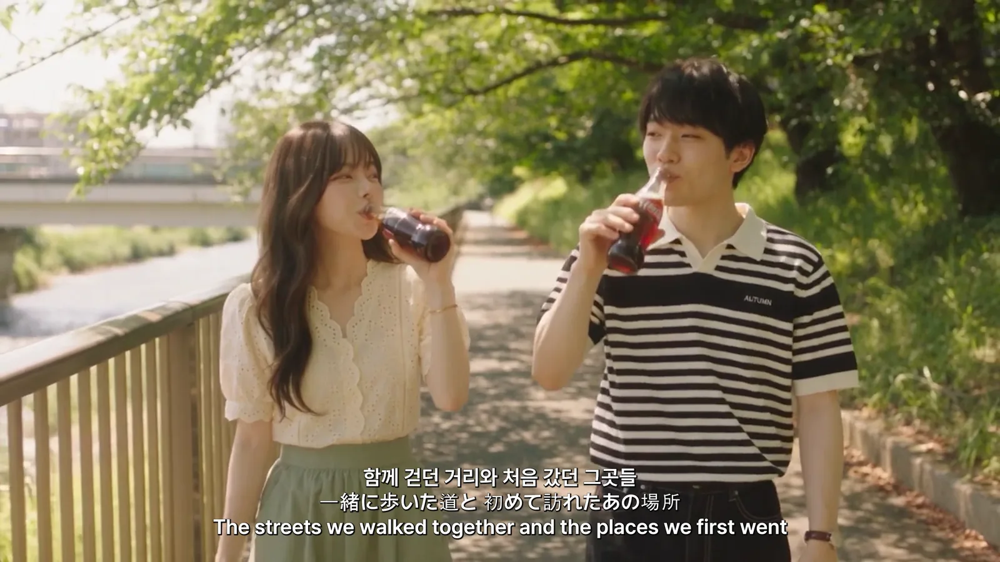
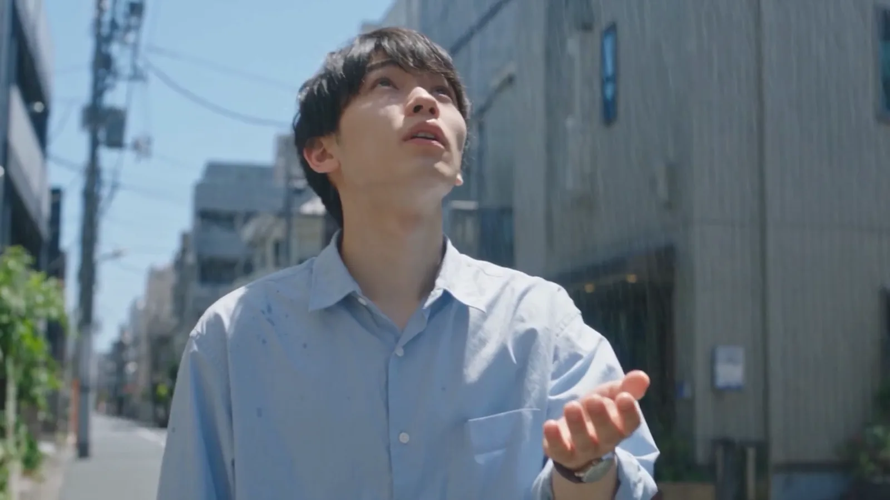
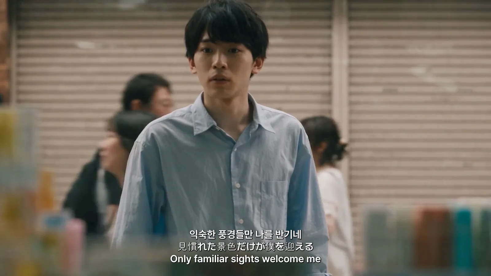
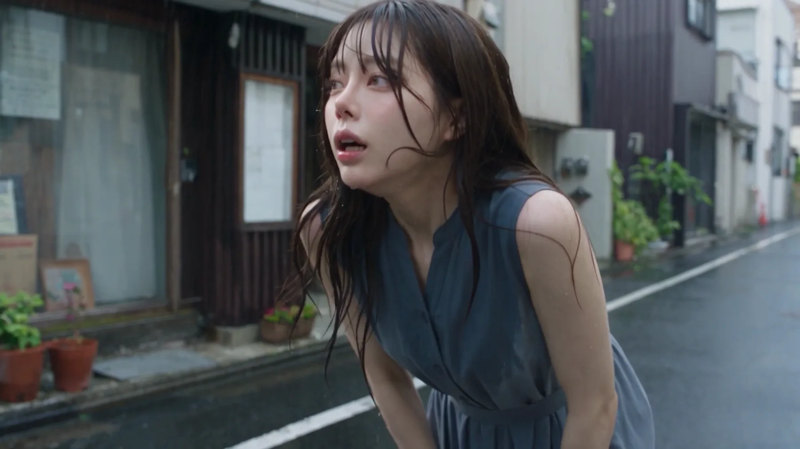
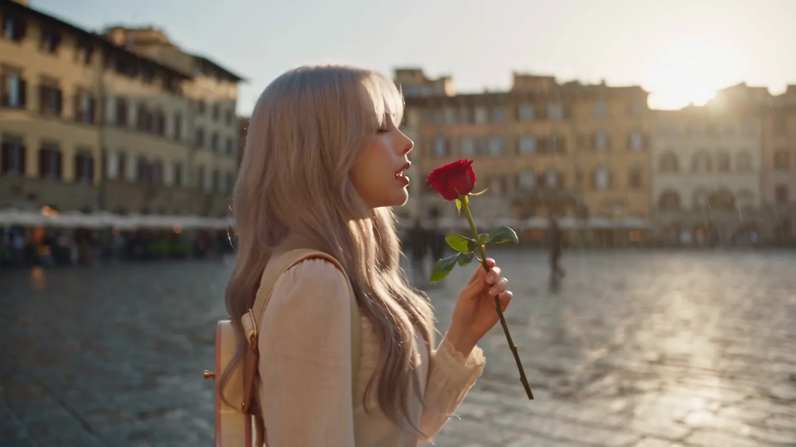
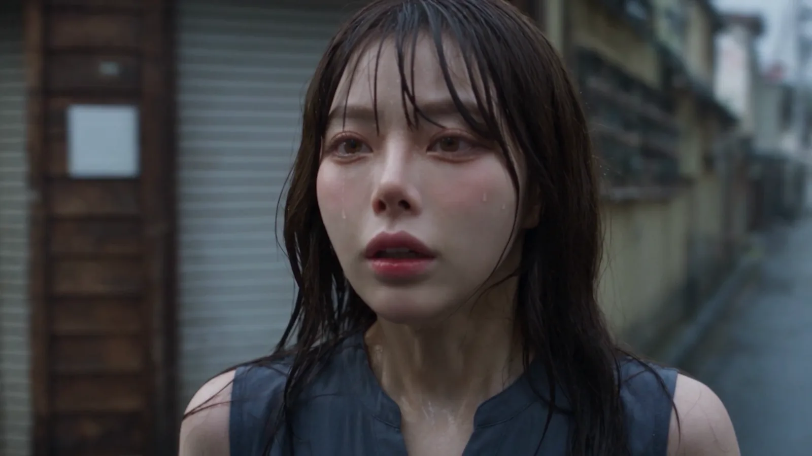
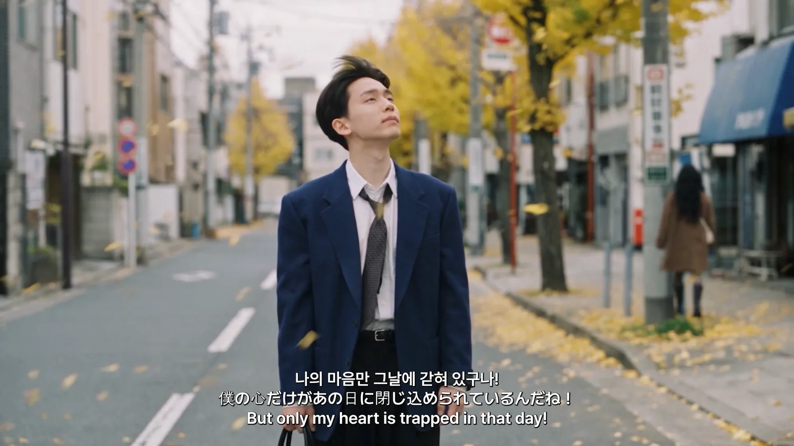
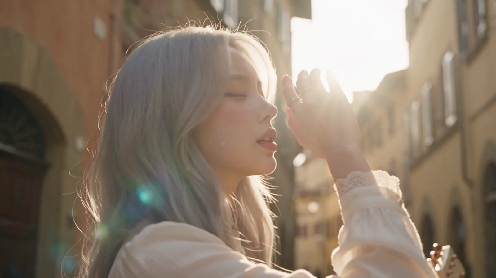
새 앨범 LIA Echo of the Wind. 지금 Spotify에서 만나보세요.
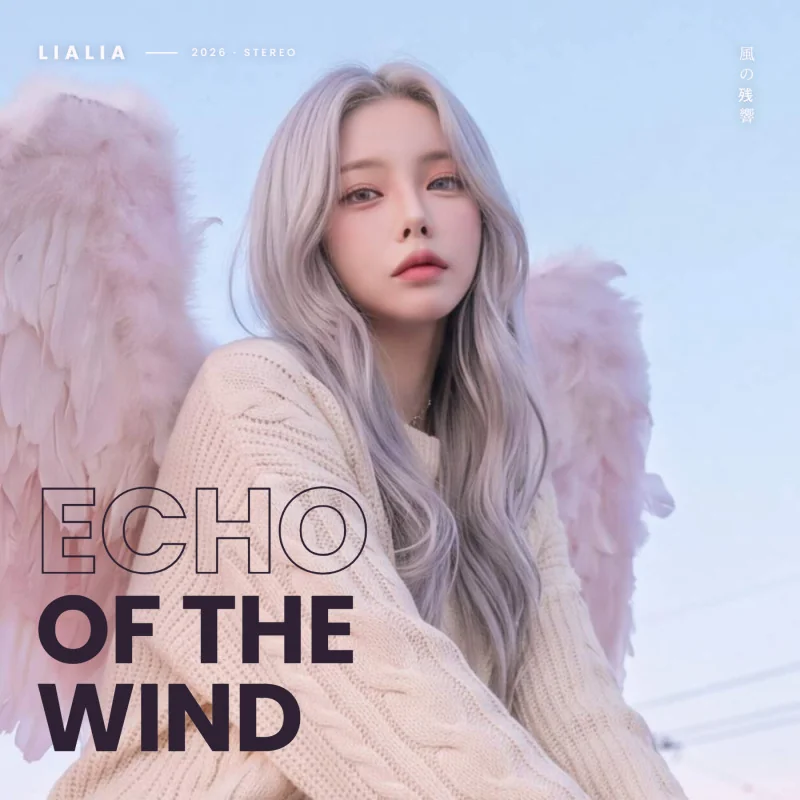

멈춰 있던 마음을 다시 달리게 하는 장면들. 맑은 하늘, 밤의 빗길, 무대 뒤의 숨결까지 — LIA가 꿈을 향해 건네는 플레이리스트.
무대 위의 빛, 고요한 시선, 일상의 작은 순간. LIA의 또 다른 이야기를 담았습니다.
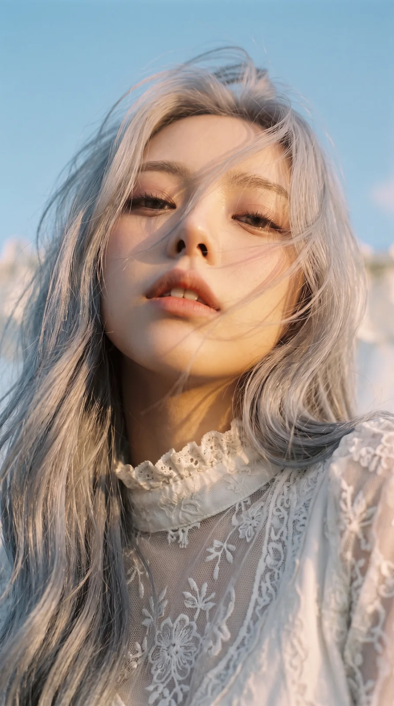
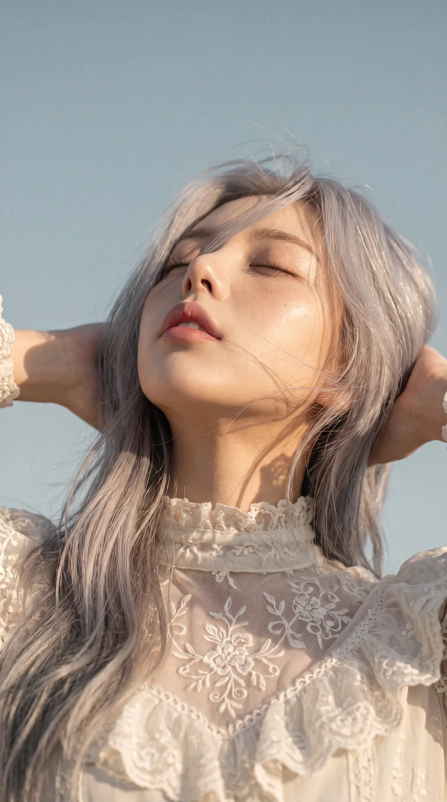
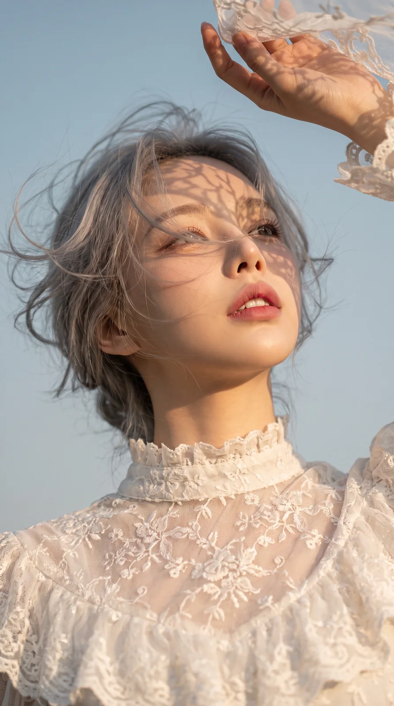
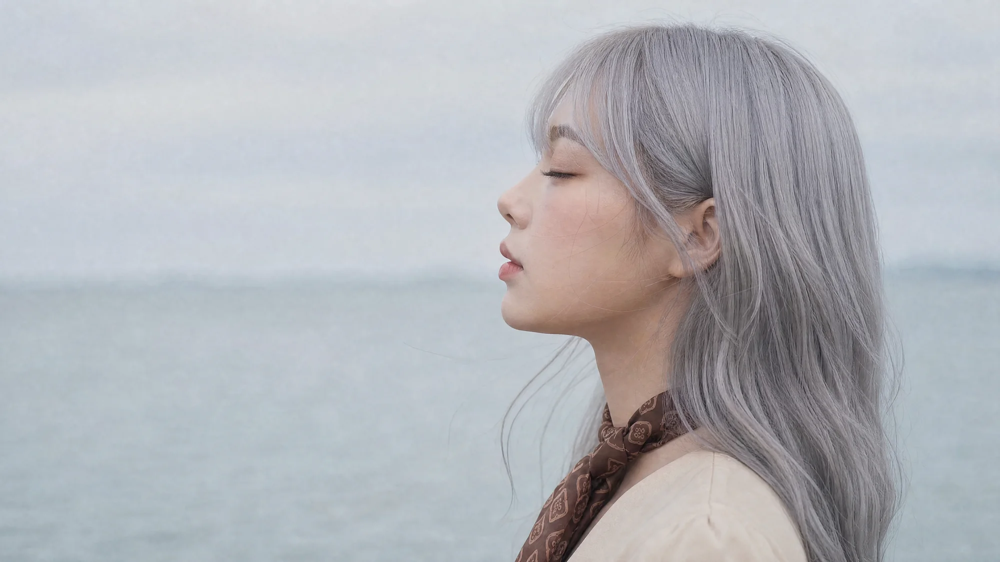


Don’t forget.
Get your dream.
YouTube · Instagram · TikTok · Spotify · Apple Music